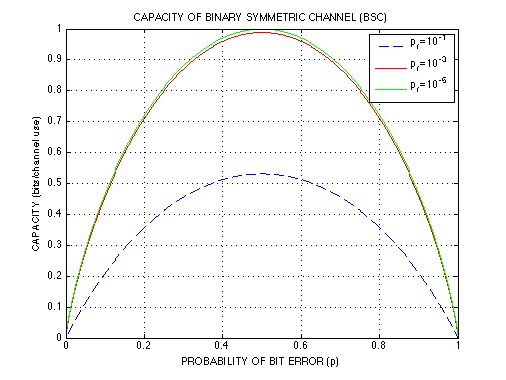

CAPACITY OF BINARY SYMMETRIC CHANNEL (BSC)
Copyright 2007 Telecommunications Lab
Plot capacity of binary symmetric channel (BSC)
Np = 401; p = linspace(0, 1, Np); pp = p(2:Np-1); % Skip p=0 and p=1 pf=10^-1; CH_x(1) = 1; CH_x(Np) = 1; CH_x(2:Np-1) = 1 + pp.*log2(pp) + (1-pp).*log2(1-pp); i=1; while i<=3 CH_y(i,1) = 1; CH_y(i,Np) = 1; CH_y(i,2:Np-1) = (pp+pf-2*pp*pf).*log2(pp+pf-2*pp*pf)+(1-pp-pf+2*pp*pf).*log2(1-pp-pf+2*pp*pf); CH_xy(i,1) = 1; CH_xy(i,Np) = 1; CH_xy(i,2:Np-1) = (1-pf).*pp.*log2((1-pf).*pp)+(1-pf)*(1-pp).*log2((1-pf)*(1-pp))+pf*pp.*log2(pf*pp)+pf*(1-pp).*log2(pf.*(1-pp)); pf=pf*10^(-2); i=i+1; end; subplot(1,1,1); plot(p, 1-(CH_x+CH_y(1,:)-CH_xy(1,:)),'--',p, 1-(CH_x+CH_y(2,:)-CH_xy(2,:)),'r',p, 1-(CH_x+CH_y(3,:)-CH_xy(3,:)),'g','LineWidth',1.5); legend('p_f=10^{-1}','p_f=10^{-3}','p_f=10^{-5}'); title('CAPACITY OF BINARY SYMMETRIC CHANNEL (BSC)') xlabel('PROBABILITY OF BIT ERROR (p)') ylabel('CAPACITY (bits/channel use)') grid